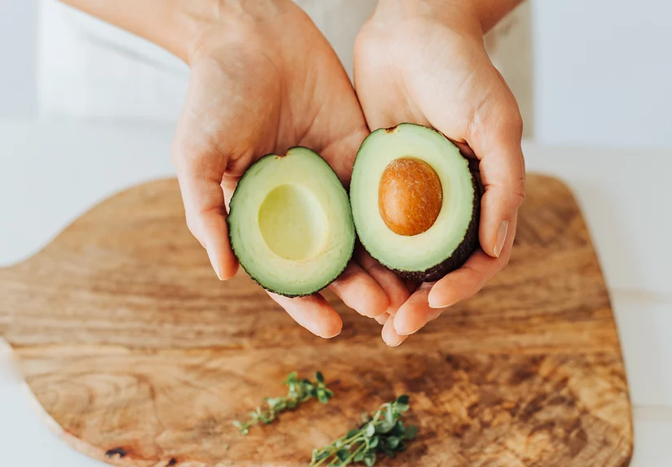

Իմ Սիրելի Ավոկադոն
Ավոկադո
Վերջերս տպագրված համապարփակ գիտական ակնարկը հայտնաբերել է առողջության վրա թարմ ավոկադոյի հիմնական չորս ազդեցություն։
- Նվազեցնում է սրտանոթային հիվանդությունների ռիսկը դիսլիպիդեմիա ունեցող, առողջ, ավելորդ քաշով կամ գեր մեծահասակների մոտ․
- Նվազեցնում է ավելորդ քաշի կամ գիրության ռիսկը, նպաստում է քաշի կորստին և նվազեցնում է ներքին ճարպային հյուսվածքը՝ ավելորդ քաշով կամ գեր կանանց մոտ.
- Ճանաչողական ֆունկցիայի բարելավում
- Խթանում է հաստ աղիքի միկրոբիոտայի առողջությունը՝ ավելորդ քաշով կամ գեր մեծահասակների մոտ․
Նաև հայտնաբերվել է ավոկադոյի չորս սննդային հատկությունների եզակի համադրություն, որոնք պատասխանատու են առողջության վրա հետևյալ բարենպաստ հետևանքները ունենալու համար։
6-ը 1-ի չհագեցած (օլեինաթթվով հարուստ) և հագեցած ճարպերի համադրությամբ, համանման է ձիթապտղի յուղին։
- Բազմաֆունկցիոնալ պրեբիոտիկների և մանրաթելերի աղբյուր է։
- Համեմատաբար ցածր էներգիայի խտությամբ է՝ 1,6 կկալ 1 գրամում։
- Ավոկադոյում պարունակվող օլեինաթթվի և ջրի էմուլսիոն խառնուրդը մեծացնում է ցածր յուղայնությամբ մրգերից և բանջարեղենից կարոտինոիդների կլանումը, երբ դրանք օգտագործվում են ավոկադոյի հետ:
Ավոկադոն հանդիսանում է միկրոէլեմենտների և պոլիֆենոլների հրաշալի աղբյուր՝ նատրիումի և մատչելի ածխաջրերի ցածր պարունակությամբ։ Թարմ Հասս ավոկադոյի ազդեցությունը առողջության վրա լավագույնս դրսևորվում է, երբ այն օգտագործվում է առողջ սննդակարգում, ինչպիսին է Միջերկրածովյան դիետան:
Գուակամոլի սննդային օգուտները գերազանցում են միայն ավոկադոյի օգուտները: Ահա թե նաև ինչու՞
Ավոկադոն հաճախ նկարագրվում է որպես հակաօքսիդանտների սննդային աղբյուր։ Այն պարունակում է լյուտեին և զեաքսանտին, երկու կարոտինոիդային սննդանյութեր, որոնք առկա են մուգ կանաչ տերևավոր բանջարեղենի մեջ: Սա կարող է բացատրել, թե ինչու մեքսիկացի ամերիկացիները, ովքեր ԱՄՆ-ում ավոկադոյի ամենաբարձր սպառողների շարքում են, հակված են գերազանցել մյուս էթնիկական խմբերին այս երկու սննդանյութերի ընդունման հարցում: Կարոտինոիդները կենտրոնացած են կեղևին մոտ գտնվող մուգ կանաչ մարմնում։ Այդ իսկ պատճառով, սպառողներին պետք է խորհուրդ տրվի օգտագործել հատուկ մի մեթոդ՝ ավոկադոյի սննդանյութերով հարուստ արտաքին հատվածը ստանալու համար: Tufts Health & Nutrition Letter-ը մանրամասնում է, թե ինչ է դա նշանակում. ավոկադոն կիսով չափ կտրեք սերմի երկայնքով, պտտեք քառորդ շրջադարձով, նորից կտրեք երկայնքով՝ քառորդ ավոկադոյի հատվածներ պատրաստելու համար, բաժանեք քառորդները, հանեք սերմը, ծայրից կտրեք և զգուշորեն մաքրեք յուրաքանչյուր հատվածը, որպեսզի անմիջապես մաշկի տակ չկորցնեք սննդանյութերով հարուստ, ամենամուգ կանաչ մարմինը:
Սեխմիր ինձԱվոկադոն կարող է նաև խթանել այլ բանջարեղենի կարոտինոիդ ֆիթոնուտրիենտների կլանումը, քանի որ կարոտինոիդները, օրինակ՝ բետա-կարոտինը, ճարպալույծ են: Սակայն, կարոտինոիդներ ստանալու համար մեր լավագույն մթերքներից շատերը, օրինակ՝ բաթաթը, գազարը և մուք կանաչ տերևավոր կանաչեղենը, շատ քիչ ճարպ են պարունակում (1 գ-ից պակաս մեկ չափաբաժնի համար): Այսպիսով, եթե դուք դրանք ուտեք առանց ճարպի որևէ աղբյուրի, ձեր օրգանիզմը բավական քիչ մաս կյուրացնի։
Հիշեք, որ կարևորը այն չէ, թե ինչ ենք ուտում, այլ այն, թե որքան է մեր օրգանիզմը կլանում։
Հետաքրքիր է, նաև, որ ավոկադոյի օգտագործումը կարող է բարելավել ոչ միայն կարոտինոիդների կլանումը, այլև դրանց հետագա վերածումը օրգանիզմում վիտամին A-ի:
Ուշադրություն
Ավոկադո ուտողների մոտ նույնպես աճում է ճարպալույծ մեկ այլ վիտամին K-ի մակարդակը: Մենք տասնամյակներ շարունակ գիտեինք, որ թեև ավոկադոյի մեջ վիտամին K-ի անսահման քանակություն չկա, այն միևնուն է խանգարում է Coumadin դեղամիջոցին, որը նաև հայտնի է վարֆարին անվամբ: Մենք հստակ չգիտենք, թե ինչու: Հնարավոր է խթանելով լյարդի դետոքսիկացնող ֆերմենտները կամ կանխելով դեղամիջոցի կլանումը, բայց, ամեն դեպքում, արյունը նոսրացնող Coumadin-ի օգտագործողները կարող են ավոկադոյի փոխարեն ցանկանալ ընկույզ ավելացնել իրենց աղցանների վրա: